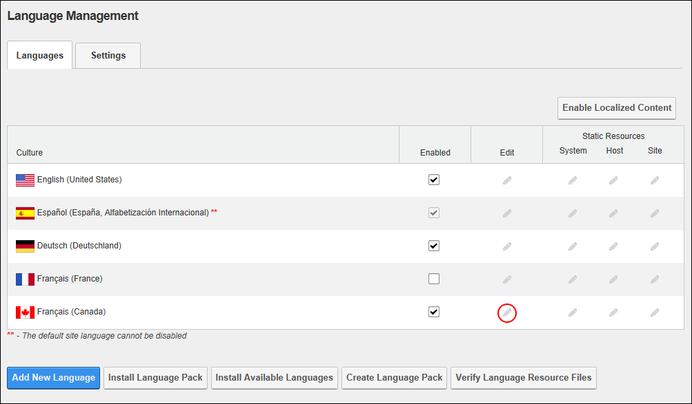
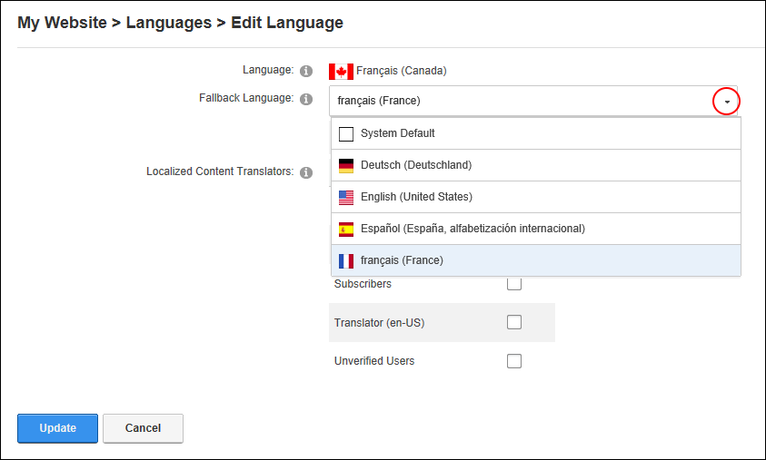

Setting Fallback Languages
How to set the fallback language using the Languages module. The fallback language is used if the selected language is not available. Restricted to SuperUsers only.
- Navigate to Admin > Advanced Settings >
 Languages - OR - Go to a Languages module.
Languages - OR - Go to a Languages module.
- Select the Languages tab.
- In the Edit column of the Culture grid, click the Edit this Language
 button beside the required language.
button beside the required language.

- Optional. At Fallback Language, select Native Name to view names in their native spelling, or English Name to view names in English spelling.
- At Fallback Language, select the fallback language to be used - OR - Select System Default to always use the default system language.

-